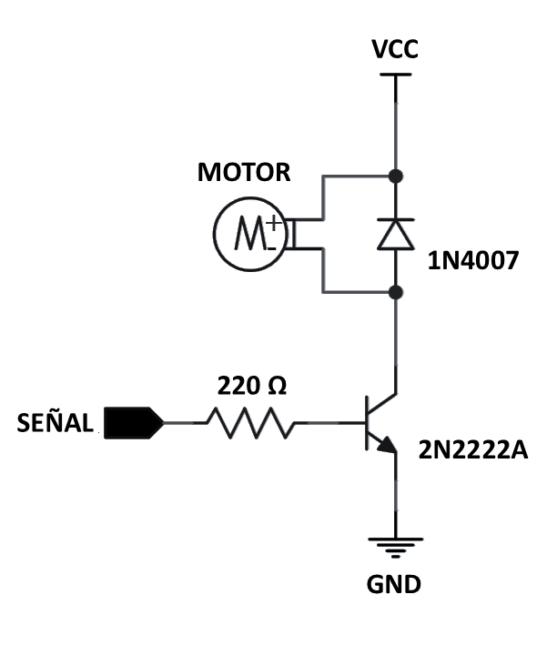

3 Desarrollo, construcción y validación
En esta sección se describe el proceso completo de desarrollo, construcción y validación del dispositivo presentado en esta tesis. La Sección 3.1 aborda la metodología general del proyecto, incluyendo una descripción detallada del dispositivo, la selección de los componentes y la justificación de su elección. En la Sección 3.2 se desarrolla la etapa de diseño y construcción del dispositivo. La Sección 3.3 se centra en el diseño y la implementación de las encuestas mediante la interfaz gráfica, mientras que la Sección 3.4 detalla el proceso de calibración de los sensores, para asegurar fiabilidad en las mediciones. En la Sección 3.5 se presenta la lógica de programación del dispositivo, y en la Sección 3.6 se proporcionan instrucciones de uso. Finalmente, en la Sección 3.7 comprueba la funcionalidad del dispositivo para recopilar y almacenar información de confort térmico.
3.1 Metodología
- Descripción general del dispositivo:
El dispositivo presentado en esta tesis es un prototipo de reloj inteligente diseñado específicamente para la investigación en el ámbito del confort térmico. Este dispositivo permite la recopilación de datos fisiológicos, tales como la frecuencia cardíaca y la temperatura de la piel, variables cuya relación con el confort térmico se discutió en el capítulo anterior. Además, este dispositivo realiza encuestas periódicas simplificadas de confort térmico mediante una interfaz de usuario intuitiva, que permite responder la encuesta de forma rápida y sencilla. La recopilación de estos datos se realiza en la plataforma de IoT llamada ThingsBoard, lo que permite la creación de una base de datos de confort térmico en un bioclima cálido semihúmedo (Infonavit 2024) en Temixco, Morelos. Esta base de datos facilitará estudios para el entendimiento del confort térmico y el desarrollo de modelos de confort para este tipo de bioclima, así como de modelos de confort personalizados.
- Selección de componentes
Para garantizar el funcionamiento preciso y adecuado del dispositivo, es fundamental seleccionar correctamente todos los componentes. A continuación se describen los principales componentes utilizados, junto con sus características y la justificación de su elección en el proyecto. Esta justificación se basa en criterios como compatibilidad, consumo energético, precisión y capacidad de procesamiento en el caso del microcontrolador.
Los componentes principales son los siguientes:
- Placa de desarrollo
- Pantalla
- Batería
- Sensores
Placa de desarrollo
La selección de la tarjeta o placa de desarrollo es una decisión crucial en el desarrollo del proyecto. Se requiere una placa de tamaño reducido que cumpla con características esenciales como conexión WiFi, velocidad de procesamiento, memoria y comunicación I2C. Además, debe tener un bajo consumo energético para garantizar el uso portátil prolongado del dispositivo.
Se buscan placas compactas con conectividad inalámbrica. Opciones con microcontroladores como los de Arduino, ESP y Raspberry ofrecen estas características.
Durante el proceso de selección se identifican dos placas con pantallas integradas, que aunque podrían ser útiles, no cumplen con los requisitos del proyecto. La placa LILYGO TTGO, no cuenta con tecnología táctil, lo cual limita su utilidad para realizar encuestas de confort térmico. Por otro lado, la MCU RP2040 con LCD redondo de 1.28 pulgadas, aunque cuenta con una pantalla táctil, no ofrece conectividad WiFi, un requisito esencial. Aunque estas dos placas no son tomadas en cuanta por las razones ya mencionadas, sirven como referencia para la búsqueda de otras opciones. En la tabla Tabla 3.1 se presenta una comparación de diferentes placas de desarrollo con las características requeridas.
| Placa de desarrollo | Wifi | Bluetooth | Comunicación | Cable | Pines |
|---|---|---|---|---|---|
| Arduino Nano 33 IoT | si | 4.2 | SPI, I2C, I2S, UART | Micro USB | 30 GPIOS, 8 ADC |
| Arduino nano esp32 | si | LE | UART, I2C, SPI, I2S, CAN(TWAI) | USB C | 22 GPIOS, 8 ADC |
| Arduino nano RP2040 connect | si | si | STI, I2C, I2S, PIO, UART | USB C | 30 GPIOS, 8 ADC |
| Raspberry pi pico W | si | 5.2 | UART, I2C, SPI | Micro USB | 26 GPIOS, 3 ADC |
| ESP32 pico kit | si | si | I2C, I2S, SPI | Micro USB | 34 GPIOS |
| Seeed Studio XIAO ESP32C3 | si | 5 | 1x UART, 1x IIC, 1x SPI | USB C | 11 GPIOS, 4 ADC |
| Seeed Studio XIAO ESP32S3 | si | 5 | 1x UART, 1x IIC, 1x SPI | USB C | 11 GPIOS, 9 ADC |
Si bien todas las placas presentadas son opciones viables, Seeed Studio ha desarrollado placas orientadas a aplicaciones de dispositivos portátiles. Estas placas empatan perfectamente con las necesidades del proyecto debido a su tamaño compacto, conectividad, modos de bajo consumo y la posibilidad de la integración con una pantalla táctil desarrollada por la misma marca. Para el desarrollo del proyecto, se elige la XIAO ESP32C3 sobre la XIAO ESP32S3. Aunque la primera es menos potente, cumple con todos los requerimientos a un menor costo. No obstante, la XIAO ESP32S3 podría ser usada sin ningún problema, ofreciendo incluso aumentar considerablemente la capacidad de memoria para futuras modificaciones o mejoras en el código. La Tabla 3.2 muestra las características especificas de la placa seleccionada.
| Parametro | Seeed Studio XIAO ESP32C3 |
|---|---|
| Procesador | ESP32-C3 32 bit RISC-V 160 MHz |
| Conectividad | 2.4 GHz WiFi BLE: Bluetooth 5.0, Bluetooth mesh |
| On-chip Memory | 400 KB SRAM & 4 MB Flash |
| Interfaz | 1x UART, 1x IIC, 1x SPI, 11x GPIO(PWM), 4x ADC, 1x Reset button, 1x Boot button |
| Dimensiones | 21 x 17.8 mm |
| Características eléctricas | Voltaje de entrada (Typo-C): 5 V Voltaje de operación 3.3 V |
| Circuit operating Voltage (ready to operate): - Type-C: 5 V@19mA - BAT: 3.8 V@22mA |
|
| corriente de carga de bateria: 350 mA/100 mA | |
| Modo de bajo consumo | Modo deep-sleep: > 44 µA |
| WiFi activado Consumo de energía | Modo activo: < 75 mA |
| Bluetooth activado Consumo de energía | Modo modem-sleep: < 27 mA |
| Temperatura de trabajo | -40 °C ~ 85 °C |
Pantalla
La elección de la pantalla debe alinearse con los criterios establecidos para la placa de desarrollo. se busca una pantalla que ademas de ser de tamaño reducido, sea compatible con la placa seleccionada. En la tabla Tabla 3.3, se presentan las características básicas de las pantallas consideradas durante el proceso.
| Pantalla | touchscreen | tecnología | dimensión |
|---|---|---|---|
| Seeed Studio Round Display for XIAO | si | TFT LCD | 1.28’’ |
| Waveshare Módulo de visualización | no | OLED RGB | 1.5’’ |
| GC9A01 Pantalla | no | TFT LCD | 1.28’’ |
La pantalla seleccionada es la Seeed Studio Round Display for XIAO. Este modelo es perfectamente compatible con la placa XIAO ESP32C3, elegida previamente, gracias al enfoque de Seeed Studio para desarrollar un ecosistema orientado a aplicaciones de dispositivos portátiles. La compatibilidad entre los componentes, tecnología táctil y diseño redondo, logran que la pantalla se ajuste a las necesidades del proyecto.
Sensor de temperatura
La Tabla 3.4 muestra una comparación entre distintos sensores de temperatura que podrían ser utilizados en el proyecto, incluyendo termistores, sensores infrarrojos y un sensor de temperatura y humedad. Estos sensores se manejan en un rango de operación entre los 3.3 V y 5.0 V para garantizar su compatibilidad con la placa de desarrollo seleccionada.
| Característica | Tipo de sensor | Rango de temperatura | Precisión | Comunicación |
|---|---|---|---|---|
| GY-906 (MLX90614) | Sensor de temperatura infrarrojo | -70°C a 382.2°C | ±0.5°C (0°C a 50°C) | I2C |
| ZTP-115M | Sensor de temperatura infrarrojo | -20°C a 100°C | ±1°C (32°C a 42°C) | Salida analógica |
| NTC MF52AT | Termistor NTC | -55°C a 125°C | ±0.2°C (dependiendo de la resistencia) | Ninguna (sensor resistivo) |
| BetaTherm 10K3A1 | Termistor NTC | -50°C a 150°C | ±0.2°C (25°C a 45°C) | Ninguna (sensor resistivo) |
| AHT20 | Sensor de temperatura y humedad digital | -40°C a 85°C | ±0.3°C (temperatura) / ±2% HR (humedad) | I2C |
Tras un análisis detallado, se selecciona el sensor GY-906 debido a su tamaño compacto, diseño adecuado y comunicación digital por I2C. Aunque el termistor NTC MF52AT ofrece una alternativa viable, se descarta por ser un sensor analógico. Dado que el dispositivo está diseñado para operar en un espacio reducido, cualquier interferencia en las conexiones internas podría afectar la precisión de los sensores analógicos. Por esta razón, se opta por el GY-906, que garantiza una transmisión de datos confiable y estable en entornos compactos.
Sensor de pulso cardíaco
Los sensores ópticos se han consolidado como una buena opción para la medición de la frecuencia cardíaca en dispositivos portátiles. Maxim Integrated ofrece la línea de sensores MAX3010X para este tipo de aplicaciones. Estos sensores destacan por su bajo consumo de energía, precio accesible, tamaño compacto y protocolo de comunicación I2C. La Tabla 3.5 muestra una comparación entre los sensores MAX20100, MAX30102 y MAX30105.
| Sensor | Tipo de almacenamiento | Resolución ADC | Funcionalidades | Consumo de Energía |
|---|---|---|---|---|
| MAX30100 | 16-bit FIFO | 14-bit | Frecuencia cardíaca y SpO2 | 600 µA a 1 mA |
| MAX30102 | 32-bit FIFO | 18-bit | Frecuencia cardíaca, SpO2 | 600 µA a 1.2 mA |
| MAX30105 | 32-bit FIFO | 18-bit | Frecuencia cardíaca, SpO2, detección de partículas | 600 µA a 1.2 mA |
El MAX30102 se elige como la mejor opción para este proyecto por su equilibrio entre funcionalidad, costo y tamaño. A comparación del MAX30105, este es más económico y más compacto. La funcionalidad de detección de partículas no es de interés para este proyecto. Además, el MAX30102 ofrece mejoras significativas respecto al MAX30100, tanto en la resolución como en el tipo de almacenamiento. La medición de oxigenación en la sangre no es una característica actual del dispositivo planteado en esta tesis, pero podría ser una variable de interés en investigaciones futuras.
Circuito vibrador
El dispositivo cuenta con un sistema de alarma silenciosa compuesta por un motor vibrador circular de 8 mm de diámetro, alimentado a 3.7 V y un circuito de control. La Figura 3.1 muestra este circuito.

Batería
El uso de baterías de polímero de litio (LiPo) es ampliamente utilizado en dispositivos portátiles debido a sus características de pequeño tamaño, bajo peso y facilidad de carga. Para este proyecto, que integra una placa de desarrollo XIAO ESP32C3, una pantalla XIAO Round Display, un sensor GY-906, un sensor MAX30102 y un circuito vibrador, es crucial seleccionar una capacidad de batería que asegure un funcionamiento continuo y confiable, considerando el consumo energético de cada componente involucrado.
La XIAO ESP32C3 presenta un consumo promedio de 74.7 mA durante su operación activa (Studio 2024), mientras que la pantalla XIAO Round Display demanda aproximadamente 70.0 mA (Solution 2024). Por su parte, el sensor GY-906 tiene un consumo de corriente bajo, en el rango de 1.0 a 2.0 mA (Melexis 2009), el sensor MAX30102 consume entre 0.6 y 1.2 mA durante la medición de la frecuencia cardíaca (Integrated 2015). Adicionalmente, el motor vibrador registra un consumo estimado de 84.0 mA (uElectronics 2024), dependiendo de la intensidad de la vibración y la carga aplicada.
El consumo total del dispositivo en condiciones de operación máxima puede alcanzar 232.0 mA. Sin embargo, este nivel de consumo es poco probable alcanzarse durante el uso típico del dispositivo,ya que, durante la mayor parte del tiempo los sensores y la pantalla permanecen inactivos y solo se encenderan al momento de llevar a cabo sus mediciones; el motor vibrador se enciende únicamente por breves periodos cada hora. Con el fin de asegurar autonomía del dispositivo y evitar interrupciones en su funcionamiento, se selecciona una batería de 650.0 mAh. Este capacidad satisface los requisitos energéticos, permitiendo el uso prolongado del dispositivo. Además, la batería seleccionada cumple en tamaño y peso, ajustándose adecuadamente al diseño del dispositivo.
La Tabla 3.6 muestra todos los componentes seleccionados para el desarrollo del dispositivo.
| Componente | Descripción |
|---|---|
| XIAO ESP32C3 | Placa de desarrollo compacta con Wi-Fi y BLE |
| XIAO Round Display | Pantalla circular táctil de 1.28 pulgadas |
| GY-906 | Sensor infrarrojo de temperatura sin contacto |
| MAX30102 | Sensor óptico de frecuencia cardíaca |
| Circuito vibrador | Circuito vibrador para notificaciones silenciosas |
| Batería 650 mAh | Batería LiPo recargable |
- Diseño del dispositivo
Una vez seleccionados los componentes principales del dispositivo, el diseño se centra en crear una carcasa compacta y adecuada en donde los componentes puedan colocarse sin interferir entre ellos y así mismo el desarrollo de los circuitos internos de conexión
Carcasa:
La carcasa del dispositivo esta diseñada para ser impresa en 3D y consta de tres partes principales y un seguro. La primera parte es la base y esta es la que está en contacto con la muñeca del usuario, cuenta con ranuras para el acomodo y fijación de los sensores y que estos queden en contacto directo con la piel para llevar a cabo las mediciones de forma adecuada
La parte central de la carcasa es la pieza que va arriba de la base y es donde se aloja el microcontrolador, el motor vibrador y el interruptor de encendido. La pieza está diseñada con compartimentos para fijar cada uno de estos componentes. Por la parte exterior de la carcasa, esta pieza cuenta con ranuras para colocar las correas que fijan el dispositivo a la muñeca del usuario.
La parte superior de la carcasa está diseñada con el fin de mantener la pantalla táctil en su posición y cerrar el dispositivo. Todas las piezas se ensamblan una con otra por presión, evitando el uso de tornillos.
Adicional, hay una cuarta pieza que es un seguro para fijar el interruptor de encendido. Esta se coloca por encima del interruptor una ve esté colocado en su posición en la pieza central. El seguro ensambla por presión a la pieza y deja fijo el interruptor.
En la Figura 3.2 Se observan las tres piezas principales de la carcasa.

Diseño de los circuitos
El diseño de los circuitos se divide en tres circuitos, circuito vibrador para alarma Figura 3.3 a) , circuito de sensores y microcontrolador Figura 3.3 b) y el circuito de la batería Figura 3.3 c). Cada uno de estos circuitos está diseñado para mantener las conexiones lo más simples y cortas posibles. Dado que la placa XIAO ESP32C3 y la pantalla XIAO Round Display se ensamblan directamente, se omite ese circuito.

El código de colores utilizado en este proyecto, para facilitar las conexiones, es:
- Rojo: Conexión Vcc (3.3 V).
- Negro: GND.
- Azul: cable de comunicación SCL.
- Blanco: cable de comunicación SDA.
- Verde: señal de activación del motor.
- Amarillo: conexión entre el pin emisor del transistor y el motor vibratorio.
El circuito vibrador es un circuito sencillo de control de motor. su principal objetivo proteger el microcontrolador, evitando que el motor se alimente directamente desde el pin digital del microcontrolador, si no que lo haga directamente de la fuente de alimentación general del dispositivo, mientras que el pin del microcontrolador se utiliza únicamente para enviar la señal de activación.
El circuito que conecta los sensores con el microcontrolador tiene como propósito establecer la comunicación simultánea de ambos sensores mediante el protocolo I2C.
El circuito de la batería integra un interruptor de encendido y apagado, que permite al usuario controlar la alimentación del dispositivo; y un conector JST, que proporciona la conexión directa con la pantalla táctil XIAO Round Display.
Finalmente, en la Figura 3.4 se ilustra la organización de los distintos componentes del dispositivo, haciendo una separación entre los elementos internos y externos del reloj. Los componentes dentro del recuadro negro son aquellos que están contenidos físicamente dentro de la carcasa del reloj, como los sensores, la batería, la antena WIFI, el circuito de la pantalla, el circuito vibrador y el microcontrolador. Por otro lado, los elementos que se encuentran fuera del recuadro negro corresponden a los componentes externos con los cuales el usuario interactúa directamente, como el interruptor de encendido y apagado, la pantalla táctil y el puerto de carga USB-C. Además, el diagrama indica las interconexiones entre los diferentes componentes con líneas. Se destaca que la conexión entre los sensores y el microcontrolador es mediante el protocolo I2C.
3.2 Construcción del dispositivo
La construcción del dispositivo en tres etapas: La impresión de la carcasa, la conexión de los componentes electrónicos y la integración y montaje de todos los elementos.
Carcasa: los archivos STL para la impresión de la carcasa los puedes encontrar en el repositorio del proyecto
Componentes electrónicos: Las conexiones de los componentes electrónicos se llevan a cabo siguiendo los diagramas de Figura 3.3. Es importante seguir correctamente los diagramas para facilitar posteriormente su acomodo dentro de la carcasa.
Integración y montaje: Una vez realizadas las conexiones, se lleva a cabo el montaje de los circuitos dentro de la carcasa, esta se ensambla y se colocan las correas.
En el articulo XXX puede encontrar información más detallada acerca del diseño y los pasos a seguir para la construcción del dispositivo.
3.3 Encuestas e interfaz
Una de las principales características del reloj inteligente presentado, es la capacidad de realizar encuestas de confort térmico de manera periódica y en condiciones reales con el propósito de recolectar datos que permitan estudiar la percepción de confort térmico en el Instituto de Energías Renovables (IER) de la UNAM. A continuación se describe la metodología de implementación de las encuestas, la lógica de la interfaz y las funcionalidades que permiten la interacción eficiente entre el usuario y el dispositivo.
- Diseño de las Encuestas
El reloj inteligente lleva a cabo encuestas simplificadas de confort térmico cada hora, en horarios específicos entre las 8:00 a.m. y las 9:00 p.m., programadas en las medias horas para alinearse con los horarios de actividades en el IER, permitiendo al usuario aclimatarse antes de responder la encuesta. Al llegar el momento de responder la encuesta, el dispositivo activa una alarma vibradora que consta de tres pulsos cortos en un lapso de un segundo, para notificar al usuario. Si el usuario ignora la alarma, el botón de ‘Encuesta’ permanece activo hasta que se complete la encuesta, si después de quince minutos la encuesta no ha sido respondida, la alarma se vuelve a activar una vez más. Si esta segunda notificación es ignorada, la alarma no se activa nuevamente hasta la próxima hora programada.
La encuesta consta de cinco preguntas. Las preguntas seleccionadas se basan en los lineamientos establecidos por la ISO 10551 (International Organization for Standardization (2019)). Las cinco preguntas son las siguientes:
- Vestimenta: Presenta la pregunta: “¿Cuál es tu vestimenta actual?” donde el usuario puede seleccionar todas las prendas que este usando de una lista predefinida. El objetivo de esta pregunta es calcular el nivel de aislamiento térmico del usuario (CLO). La interfaz muestra el cálculo del valor de CLO en la parte inferior de la pantalla a medida que se seleccionan o deseleccionan las prendas. La Tabla 3.7 muestra la lista de prendas disponibles para seleccionar con su respectivo calor de CLO.
| Prenda | Valor de CLO | Prenda | Valor de CLO |
|---|---|---|---|
| Zapato | 0.02 | Shorts | 0.06 |
| Calzón | 0.04 | Vestido | 0.15 |
| Playera | 0.09 | Pantalón de mezclilla | 0.23 |
| Camisa | 0.15 | Abrigo | 0.40 |
| Pantalón | 0.25 | Gorro de lana | 0.08 |
| Calcetines | 0.02 | Bata de baño | 0.30 |
| Sombrero | 0.05 | Chaleco | 0.10 |
| Bufanda | 0.10 | Botas | 0.10 |
| Guantes | 0.10 | Impermeable | 0.20 |
| Chaqueta | 0.30 | Sandalias | 0.02 |
| Suéter | 0.18 | Brasier | 0.02 |
| Falda | 0.14 | Corpiño | 0.03 |
- Actividad: Presenta la pregunta: “¿Qué actividad estás realizando?” donde el usuario selecciona una única opción de una lista predefinida de actividades que permiten calcular la tasa metabólica (MET) del usuario. La Tabla 3.8 muestra la lista de actividades con su respectivo valor de MET asociado.
| Actividad | Valor de MET |
|---|---|
| Tomando clase sentado | 1.3 |
| Tomando clase de pie | 1.8 |
| Dando clase sentado | 2.0 |
| Dando clase de pie | 2.3 |
| Caminando | 2.9 |
| Comiendo | 1.5 |
| Escribiendo | 1.3 |
| Trabajando en computadora | 1.5 |
| De pie en un laboratorio | 2.0 |
Ubicación: Se presenta la pregunta: “¿Donde te encuentras?” donde el usuario selecciona una única opción de una lista predefinida de ubicaciones dentro del IER UNAM.
Escala de confort térmico: Se presenta la pregunta: “¿Cuál es tu sensación térmica en este momento?” donde el usuario puede elegir su sensación térmica actual en un rango de -3 a 3 en intervalos de 0.5. Cada valor tiene una descripción asociada de la sensación térmica. La Tabla 3.9 muestra la descripción asociada a cada uno de los valores del voto de sensación térmica.
| Valor de Sensación Térmica | Descripción |
|---|---|
| -3 | Helado |
| -2.5 | Mucho frío |
| -2 | Frío |
| -1.5 | Ligeramente frío |
| -1 | Fresco |
| -0.5 | Ligeramente fresco |
| 0 | Neutro |
| 0.5 | Ligeramente templado |
| 1 | Templado |
| 1.5 | Ligeramente caluroso |
| 2 | Caluroso |
| 2.5 | Muy caluroso |
| 3 | Ardiendo |
- Aceptación Térmica: Finalmente, se presenta la pregunta: “¿Aceptas la sensación térmica actual?”, donde el usuario puede responder “Sí” o “No”. Esta pregunta busca evaluar si, independientemente de la sensación térmica reportada, el usuario la percibe como aceptable.
- Interfaz de Usuario
La interfaz del dispositivo ha sido diseñada utilizando la biblioteca LVGL, que ofrece herramientas para la creación de interfaces gráficas en microcontroladores integrados con pantallas táctiles. Cada una de las preguntas descritas previamente se presenta en una pantalla distinta, permitiendo al usuario navegar de manera intuitiva y sencilla.
Navegación entre Pantallas: Cada pantalla tiene botones laterales para avanzar o retroceder entre las preguntas de la encuesta. Una vez completadas todas las preguntas, el usuario puede presionar el botón “Finalizar”.
Interacción con Pantallas: Cada pantalla que presenta una lista predefinida de opciones cuenta con botones para moverse entre las diferentes opciones disponibles. Esto permite al usuario seleccionar fácilmente la opción deseada, asegurando una interacción fluida y precisa con el dispositivo.
- Funcionalidades Adicionales y Validación
Una vez que se completa la encuesta, al pulsar el botón “Finalizar”, aparece un mensaje emergente que solicita al usuario mantenerse inmóvil mientras que los sensores de frecuencia cardíaca (MAX30102) y de temperatura de la piel (GY-906) llevan a cabo sus mediciones correspondientes, estas mediciones se realizan en un lapso de diez segundos. Los resultados se muestran al usuario para su validación. Si el usuario considera que los resultados son coherentes, puede enviarlos; de lo contrario, tiene la opción de repetir las mediciones.
Los datos recolectados son enviados a la plataforma Thingsboard para su almacenamiento y análisis posterior. Esta funcionalidad permite construir una base de datos que facilite el estudio del confort térmico en diferentes espacios y condiciones dentro del IER.
La Figura 3.5 muestra todas las pantallas

3.4 Calibración
La calibración de los sensores en el dispositivo es esencial para garantizar la precisión y confiabilidad de las mediciones. Esta sección describe el proceso de calibración de los sensores MAX30102 y GY-906, utilizados para medir la frecuencia cardíaca y la temperatura de la piel, respectivamente.
3.4.1 Calibración del Sensor MAX30102
Para la calibración del sensor MAX30102, se utiliza como referencia un oxímetro de pulso Yonker YK-81C, que ofrece una precisión de ± 1 bpm. Dado que las mediciones del reloj inteligente se realizan en intervalos de 10 segundos, este mismo periodo se emplea durante el proceso de calibración. El sensor se configura mediante Arduino y la librería de SparkFun para los sensores MAX3010X. La calibración se enfoca en la configuración óptima de varios parámetros ajustables: ledBrightness, sampleAverage, ledMode, sampleRate, pulseWidth, adcRange y RATE_SIZE.
- ledBrightness (0 - 255): Controla la intensidad de los LED infrarrojo y rojo, afectando la penetración de la luz en el tejido de la piel y, en consecuencia, la calidad de la señal obtenida. Un valor más alto aumenta la intensidad de la luz, mejorando la detección en condiciones de baja perfusión, pero incrementa el consumo de energía.
- sampleAverage (1, 2, 4, 8, 16, 32): Define cuántas muestras se promedian antes de almacenarse en la memoria FIFO. Un mayor promedio reduce el ruido y estabiliza la señal, a costa de reducir la capacidad de respuesta a cambios rápidos.
- ledMode (1 - 3): Establece el modo de operación del sensor. El valor 1 utiliza solo el LED rojo, el valor 2 emplea tanto el LED rojo como el infrarrojo para medir la frecuencia cardíaca y la saturación de oxígeno, y el valor 3 incluye un tercer LED verde en algunos modelos de la serie MAX3010X.
- sampleRate (50, 100, 200, 400, 800, 1000, 1600, 3200 Hz): Define la frecuencia con la que se toman las muestras de la señal, afectando la resolución temporal y la capacidad de captar variaciones rápidas en la frecuencia cardíaca. Una mayor frecuencia proporciona una mejor resolución temporal, pero puede aumentar el ruido si la señal no se filtra adecuadamente.
- pulseWidth (69, 118, 215, 411 µs): Controla la duración del pulso de luz emitido por los LED. Un mayor ancho de pulso mejora la resolución de las mediciones, pero también incrementa el consumo de energía del sensor y la cantidad de luz reflejada, lo cual puede saturar el ADC en ciertos tipos de piel.
- adcRange (2048, 4096, 8192, 16384 nA): Establece el rango de entrada del convertidor analógico-digital. Aumentar el rango permite al sensor manejar señales más intensas sin saturarse, mientras que un rango menor mejora la sensibilidad para señales débiles.
- RATE_SIZE (tamaño del buffer): Determina el tamaño del buffer para el cálculo de la frecuencia cardíaca. Este parámetro afecta la cantidad de datos utilizados para calcular la frecuencia cardíaca promedio. Aumentar el tamaño del buffer de 4 a 6 mejora la precisión de las lecturas, ya que permite una mayor estabilidad en los cálculos.
Inicialmente, los parámetros se configuran con valores predeterminados, pero los resultados muestran un error absoluto medio (MAE) de 18.5 bpm respecto al oxímetro de referencia, lo cual no es aceptable. Para mejorar la precisión, se exploran valores extremos del parámetro RATE_SIZE, variando desde 1 hasta 100. Con RATE_SIZE igual a 1, se obtienen resultados rápidos pero poco precisos, mientras que con RATE_SIZE igual a 100, se logra alta precisión, pero se requieren múltiples intervalos de 10 segundos, incrementando el tiempo total de medición. Para encontrar un equilibrio entre precisión y tiempo de medición, se evalúan valores intermedios de RATE_SIZE entre 4 y 16. El valor óptimo encontrado es RATE_SIZE igual a 6, lo cual reduce el MAE a 4.4 bpm.
La Tabla 3.10 muestra el error absoluto medio (MAE) obtenido para diferentes valores de RATE_SIZE entre 4 y 16, destacando que el mejor valor para RATE_SIZE es 6:
| Número de Mediciones | RATE_SIZE | MAE (bpm) |
|---|---|---|
| 20 | 4 | 18.5 |
| 20 | 6 | 4.4 |
| 20 | 8 | 12.0 |
| 20 | 10 | 19.6 |
| 20 | 12 | 7.7 |
| 20 | 14 | 13.6 |
| 20 | 16 | 15.8 |
Posteriormente, con RATE_SIZE fijado en 6, se ajusta el valor de sampleAverage de 4 a 8, logrando un MAE de 3.6 bpm, lo cual representa una mejora en la estabilidad de la señal. La configuración final optimizada incluye los siguientes valores: ledBrightness en 31, sampleAverage en 8, ledMode en 2, sampleRate en 400, pulseWidth en 411, adcRange en 2048 y RATE_SIZE en 6.
3.4.2 Calibración del Sensor GY-906
Para la calibración del sensor de temperatura GY-906, se utiliza una cámara termográfica Fluke Ti9 como referencia. Tanto el sensor como la cámara se configuran con una emisividad de 0.98, correspondiente a la emisividad promedio de la piel humana. Las pruebas se realizan durante tres días, entre las 10:00 a. m. y las 06:00 p. m., con mediciones cada media hora para capturar diferentes condiciones ambientales.
Durante cada sesión de medición, el sensor GY-906 realiza diez mediciones consecutivas en un lapso de diez segundos, y el promedio de estas mediciones se envía a la plataforma Thingsboard, lo cual permite reducir el ruido y aumentar la precisión. Simultáneamente, las lecturas de la cámara termográfica se registran manualmente. Para minimizar el error por movimiento, el dispositivo emite una alerta vibratoria de un segundo, seguida de una pausa de cuatro segundos antes de realizar la medición, permitiendo al usuario mantener la mano inmóvil durante el proceso de medición. Se obtienen 61 pares de mediciones, la Tabla 3.11 muestra las características estadísticas de ambos conjuntos de datos.
| Estadística | Sensor (°C) | Cámara (°C) |
|---|---|---|
| Media | 34.58 | 35.30 |
| Desviación estándar | 0.75 | 0.63 |
| Mínimo | 32.36 | 32.80 |
| Máximo | 35.83 | 35.83 |
Se realiza un análisis inicial entre las mediciones de la cámara respecto al sensor y se obtienen los siguientes datos:
- Error Medio (EM): 0.72°C
- Error Absoluto Medio (EAM): 0.77°C
Dada la naturaleza de los datos, se aplica una calibración mediante un modelo de regresión lineal, obteniéndose los siguientes valores clave:
- Pendiente: 0.47
- Intercepto: 18.99
Una vez obtenidos estos valores, se aplica la función de regresión lineal sobre los datos del sensor para generar una nueva columna con datos corregidos. Al comparar esta nueva columna con las lecturas de la cámara, se obtiene un error estándar de la estimación \(S_e\) de 0.54, mientras que los errores obtenidos son los siguientes:
- EM: 2.19x10-15
- EAM: 0.39
La Figura 3.6 muestra la comparación entre las gráficas de dispersión de datos antes y después de la calibración.
Posteriormente, se lleva a cabo una segunda campaña de medición, recopilando 25 pares de datos adicionales, con la finalidad de validar la función de regresión lineal obtenida. Juntando ambos conjuntos de datos, se obtiene un total de 86 pares de mediciones. Los errores iniciales de este conjunto son:
- EM: 0.59
- EAM: 0.66
Tras aplicar la función de regresión lineal, se obtiene un error estándar de la estimación \(S_e\) de 0.54, lo cual demuestra la consistencia del valor entre el primer conjunto de datos y este nuevo conjunto, mientras que los errores son los siguientes:
- EM: -0.08
- EAM: 0.41
La Figura 3.7 muestra la comparación de las gráficas de dispersión del conjunto total de datos (86 mediciones), antes y después de la calibración.

Finalmente, la Tabla 3.12 muestra los EM y EAM antes y después de la calibración de los dos conjuntos de datos, el conjunto inicial a partir del cual se obtuvo la los parámetros para realizar el modelo de regresión lineal y el conjunto de validación en el cual se llevo a cabo una segunda campaña de medición para obtener más datos y verificar la fiabilidad de la calibración.
| Conjunto inicial | Conjunto de validación | |||
|---|---|---|---|---|
| Sin calibrar | Calibrado | Sin calibrar | Calibrado | |
| ME | 0.5 | 0.89 | 0.65 | -0.08 |
| MAE | 0.72 | 0.54 | 0.61 | 0.43 |
3.5 Lógica de programación
A continuación, se describe el funcionamiento general del reloj inteligente, detallando la estructura del sistema y la función de cada uno de los archivos que componen el proyecto desarrollado en Arduino. También se presentan los diagramas de flujo de los procesos clave, como la función actualizar_hora y el procedimiento para responder una encuesta y medir las variables fisiológicas. Además, se destacan aspectos relevantes, como los horarios programados para las encuestas y las estrategias implementadas para el ahorro de energía.
El proyecto se desarrolla en Arduino, empleando principalmente la librería LVGL para el diseño de la interfaz gráfica. Está compuesto por varios archivos de código, cada uno con una función específica. A continuación, se ofrece una breve descripción de cada uno de ellos:
Proyecto_confort.ino: Este es el archivo principal del proyecto. En él se ejecuta el código principal, se incluyen las librerías necesarias, y se declaran tanto las variables como las funciones esenciales.
ui.c y ui.h: Estos archivos se encargan de la ejecución y configuración general de la interfaz gráfica. El archivo header (ui.h) contiene las declaraciones de funciones y variables utilizadas en ui.c.
ui_Inicio.c: Configura la pantalla principal del reloj. En esta pantalla se muestra la hora actual, un contador regresivo que indica cuánto tiempo falta hasta el momento de contestar la siguiente encuesta, y el botón para iniciar la encuesta cuando está disponible.
ui_Clo.c: Configura la pantalla para la pregunta sobre el nivel de aislamiento térmico de la ropa que usa el usuario. Este archivo contiene un diccionario con distintas prendas de ropa con sus respectivos valores de aislamiento térmico.
ui_Met.c: Configura la pantalla para la pregunta sobre el nivel de actividad metabólica del usuario. Este archivo contiene un diccionario con diversas actividades y sus respectivos valores de nivel metabólico.
ui_Ubicación.c: Configura la pantalla para la pregunta sobre la ubicación del usuario. Este archivo contiene una lista de ubicaciones del lugar donde se llevan a cabo las campañas de mediciones.
ui_Sensacion.c: Configura la pantalla para la pregunta sobre el nivel de sensación térmica. Este archivo contiene un diccionario con la escala de sensación térmica, que va de -3 a 3, y la descripción correspondiente para cada nivel.
ui_Aceptación.c: Configura la pantalla destinada a la pregunta de aceptación térmica.
ui_events.c y ui_events.h: En ui_events.c Contienen todas las funciones creadas específicamente para el proyecto, tanto las relacionadas con la gestión de eventos generados por la interfaz como otras funciones generales del programa. El archivo de encabezado (ui_events.h) contiene las declaraciones de las funciones y variables utilizadas en ui_events.c.
ui_helpers.c y ui_helpers.h: Contienen funciones auxiliares de la librería LVGL, diseñadas para facilitar la implementación y el manejo de la interfaz gráfica. El archivo header (ui_helpers-h) contiene las declaraciones de funciones y variables utilizadas en ui_helpers.c.
El reloj está programado para realizar encuestas de confort térmico cada hora entre las 08:30 y las 21:30 horas. Programar las encuestas para realizarse en el minuto 30 de cada hora permite proporcionar al usuario un periodo de adaptación térmica previo a responder la primera encuesta. Esto se debe a que las actividades en el IER suelen iniciar en horas exactas, lo que asegura que los usuarios tengan tiempo suficiente para estabilizar su sensación térmica antes de contestar la primera encuesta.
La función denominada actualizar_hora, que se encuentra en el archivo ui_events.c, se encarga de actualizar la hora en pantalla, además habilita o desahibilita el botón para realizar la encuesta según el horario o si esta ya fue o no contestada. Esta función también es la encargada de emitir la alarma para alertar al usuario la disponibilidad de una nueva encuesta. El diagram de flujo de esta función se presenta en la Figura 3.8.

Cuando el usuario presiona el botón para iniciar la encuesta, se da inicio a un proceso que consta de varias etapas: primero, el usuario responde a las preguntas de la encuesta; luego, se registran las variables fisiológicas; seguidamente, se validan las mediciones obtenidas; y, finalmente, se envían los datos a la plataforma Thingsboard.
Es importante destacar que, una vez enviada la encuesta, las respuestas y mediciones no se reinician automáticamente. Esto permite que, al iniciar una nueva encuesta, el reloj conserve las respuestas de la última encuesta realizada. De esta manera, el usuario puede optar por mantener las mismas respuestas o modificarlas según sea necesario. Esta funcionalidad tiene dos objetivos principales: en primer lugar, reducir el tiempo necesario para responder encuestas de manera consecutiva; y, en segundo lugar, permitir al usuario observar cómo evolucionan sus respuestas a lo largo del día.
En caso de que las mediciones de los sensores no sean aceptadas por el usuario, estas se realizan nuevamente. El diagrama de flujo que describe el proceso de la encuesta se presenta en la Figura Figura 3.9.
Para optimizar el consumo de energía, se implementan dos estrategias principales. La primera consiste en mantener la pantalla del reloj apagada mientras el dispositivo está en reposo. Si la pantalla está encendida y no se detecta actividad durante más de 10 segundos, se apaga automáticamente. No obstante, el usuario puede reactivarla en cualquier momento con un simple toque para consultar la hora. La segunda estrategia consiste en mantener apagados el sensor de temperatura (GY-906) y el sensor de frecuencia cardiaca (MAX30102), activándose únicamente durante el proceso de medición de las variables fisiológicas.

En la siguiente sección (Sección 3.6), se detallan las configuraciones iniciales necesarias para el funcionamiento del dispositivo, tales como la conexión a la red WiFi, la configuración del token del dispositivo y la configuración del servidor de Thingsboard.
3.6 Instrucciones de uso
- Integración con la plataforma iot
- manejo de los datos